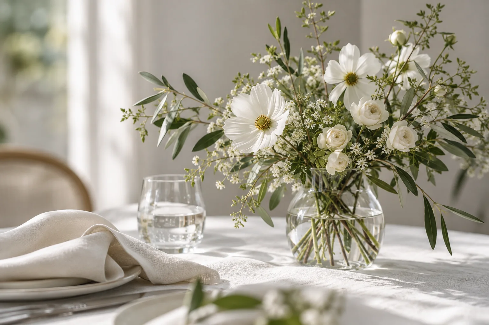

OUR WEDDING ARCHIVE
One day.
A lifetime
of memories.
あの日のつづきを、ここで。
写真と音楽と映像で振り返る、
私たちのウエディング。仮原稿

A LITTLE PLACE FOR OUR MEMORIESEXPLORE
何度でも、思い出せるように。
笑い合った瞬間も、心に残ったメロディーも。
あの日のかけらを、みなさまと分かち合えたらうれしいです。
撮ってくださった写真を集める場所と、
当日の音楽や映像を、ここにまとめました。
02 / REVISIT THE DAY
音楽と映像で、もう一度。
心に残るシーンを、いつでも。